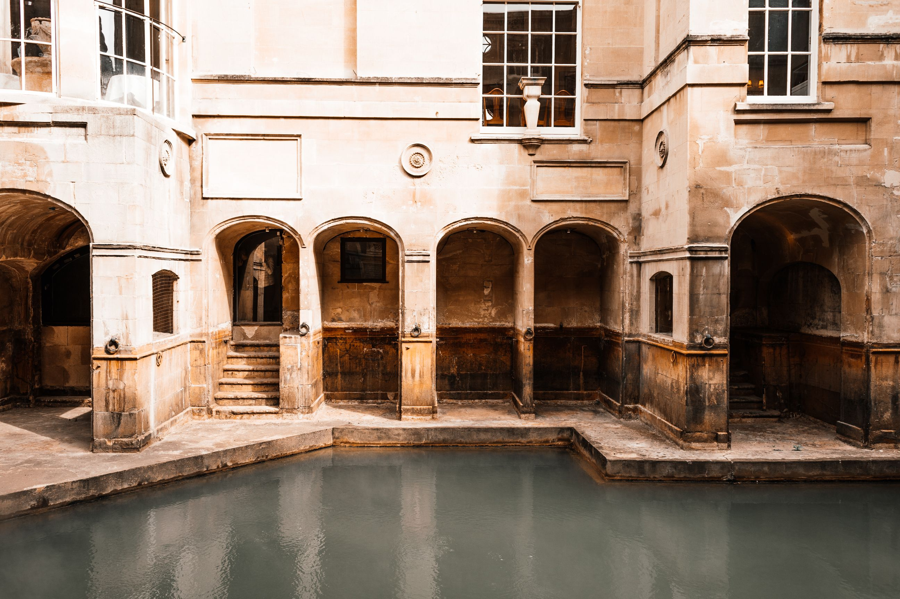
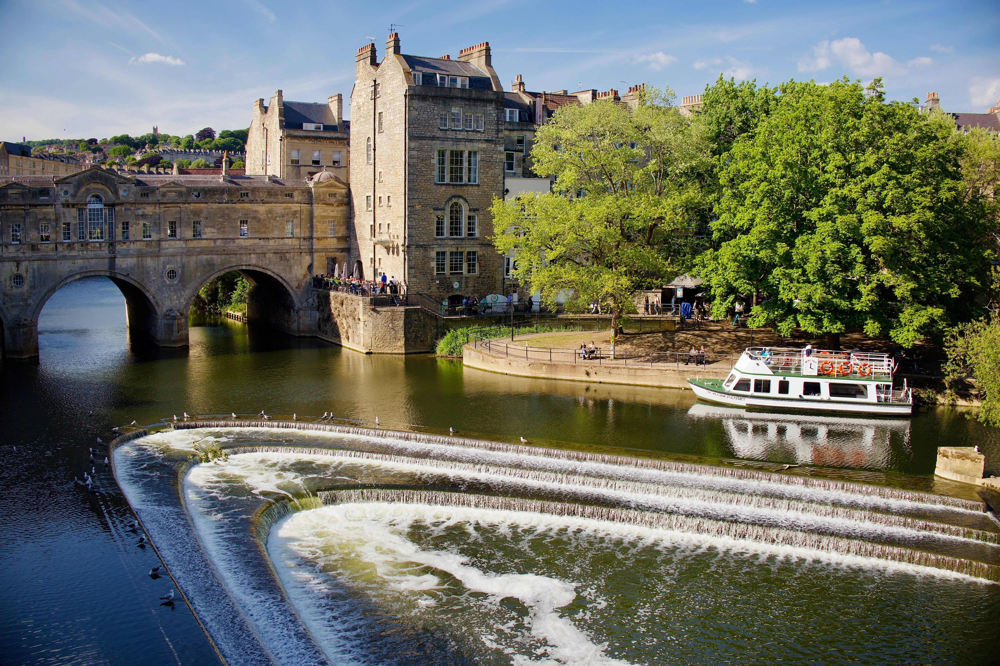
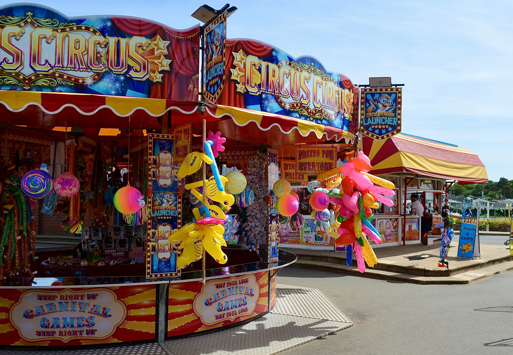
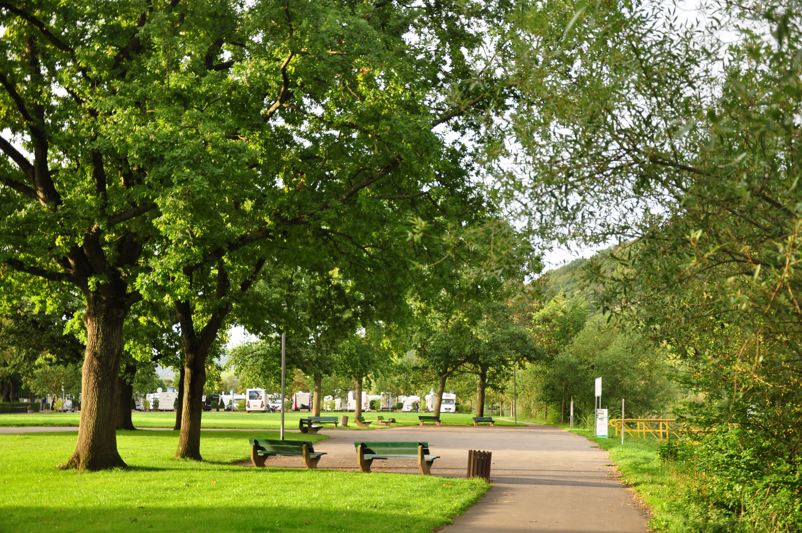

01
HISTORY
Roman Baths
Step into Bath's ancient Roman bathing complex and discover one of the city's most famous historic attractions.
Explore PlaceDiscover the elegant city of Bath, famous for its Roman heritage, beautiful Georgian architecture, relaxing thermal waters and charming historic streets.
Bath is one of England's most distinctive historic cities, known for its Roman heritage, elegant Georgian architecture and beautiful natural surroundings.
Explore ancient Roman sites, wander through honey-coloured streets and discover the stories behind the city's remarkable architecture.
From relaxing thermal experiences and fascinating museums to independent shops, cafés and scenic walks, Bath offers plenty to enjoy at a leisurely pace.
Explore Bath's Roman heritage, elegant architecture, historic streets, beautiful gardens and cultural landmarks.

01Step into Bath's ancient Roman bathing complex and discover one of the city's most famous historic attractions.
Explore PlaceAdmire the impressive Gothic architecture of Bath Abbey, standing at the heart of the historic city centre.
Explore PlaceSee one of Bath's most iconic Georgian landmarks, famous for its sweeping crescent of elegant honey-coloured townhouses.
Explore Place
04Walk across this beautiful historic bridge and enjoy views of the River Avon and Bath's famous weir.
Explore Place
05Discover this remarkable circular arrangement of Georgian townhouses and one of Bath's finest architectural landmarks.
Explore Place
06Escape into peaceful landscaped gardens and enjoy beautiful views across Bath's surrounding countryside.
Explore PlaceExperience Bath through Roman history, relaxing thermal waters, elegant architecture, scenic walks and the city's vibrant food and culture.
Step back in time and explore Bath's remarkable Roman heritage, ancient ruins and fascinating historic sites.
01Enjoy Bath's famous thermal spa experiences and take some time to relax in the city's naturally warm waters.
02Wander through elegant streets and discover iconic buildings such as the Royal Crescent and The Circus.
03Explore Bath's historic centre on foot and uncover stories, architecture and hidden corners along the way.
04Take a peaceful walk beside the River Avon and enjoy views around Pulteney Bridge and Bath's beautiful weir.
05Discover independent shops, cafés, restaurants and local food experiences throughout the city centre.
06Bath's historic centre is compact and easy to explore on foot. Many of the city's famous landmarks, shops, cafés and historic streets are close together.
Local buses and trains are useful when travelling beyond the city centre, while taxis can be convenient for shorter journeys.
Comfortable walking shoes are highly recommended. Exploring Bath on foot lets you appreciate its architecture and historic streets at your own pace.
Bath is beautiful throughout the year, with each season offering a different atmosphere and experience.
Enjoy fresh greenery, blooming gardens and comfortable temperatures for exploring Bath's historic streets, parks and landmarks.
Longer days make summer ideal for sightseeing, walking, outdoor dining and enjoying Bath's gardens and parks.
MOST POPULARCooler temperatures and colourful foliage create a relaxed atmosphere for historic walks and cultural sightseeing.
Discover a quieter side of Bath with cosy cafés, museums, historic architecture and a peaceful winter atmosphere.
A few practical tips to help you make the most of your visit to this historic and beautiful city.
Bath is best explored on foot, so comfortable shoes will make it easier to enjoy the city's historic streets, hills and attractions.
Check opening times and visitor information for major attractions before your trip, especially during busy periods.
Arriving early can help you enjoy the city's most popular landmarks before the busiest part of the day.
Bring layers and a light waterproof jacket so you are prepared for changing UK weather while exploring outdoors.
Leave time for parks, gardens, viewpoints and quieter streets beyond Bath's main tourist attractions.
Group nearby attractions together to save walking time and make your day in Bath more relaxed and enjoyable.
Helpful answers to common questions when planning your Bath visit.
Two days is a comfortable amount of time to explore Bath's main historic attractions, Roman heritage, Georgian architecture, gardens and local cafés. A day trip is also possible if you plan ahead.
Bath is famous for its Roman Baths, natural thermal waters, Georgian architecture, Bath Abbey, Royal Crescent and beautiful historic city centre.
Yes. Bath's historic centre is compact and many major attractions can be reached on foot. Local buses and taxis are useful for places further away.
Yes. The Roman Baths are one of Bath's major attractions and offer visitors an opportunity to learn about the city's ancient Roman history.
Comfortable walking shoes are essential. Layers and a waterproof jacket are also useful because weather conditions can change throughout the day.
Yes. Bath is a popular day-trip destination, and many of its main attractions are close to each other in the historic city centre.
Discover Roman history, elegant Georgian architecture, relaxing thermal experiences and beautiful countryside around one of England's most fascinating historic cities.